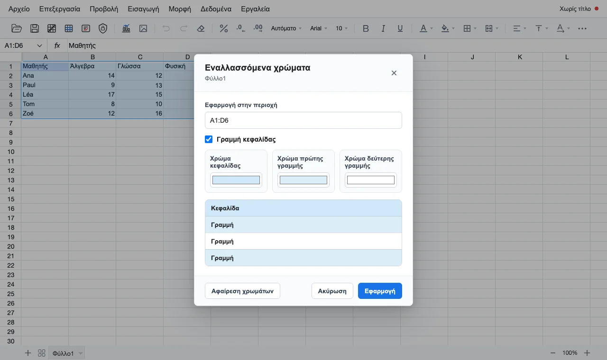

Μορφοποίηση
Κείμενο
| Εντολή | Πρόσβαση |
|---|---|
| έντονα, πλάγια, υπογραμμισμένα | · Ctrl B, Ctrl I, Ctrl U |
| γραμματοσειρά | λίστα Arial: δεκατρείς γραμματοσειρές |
| μέγεθος | λίστα 10, ή Μορφή › Μέγεθος γραμματοσειράς: 9 έως 72 |
| χρώμα κειμένου, φόντου | |
| εκκαθάριση μορφοποίησης | , Μορφή › Απαλοιφή μορφοποίησης |
Στην παλέτα ενός χρώματος, το Επαναφορά χρώματος το αφαιρεί· το Προσαρμοσμένο ανοίγει τον επιλογέα του συστήματος.
Όσο τροποποιείται ένα κελί, η μορφοποίηση εφαρμόζεται στο επιλεγμένο τμήμα του κειμένου.
Στοίχιση
| Εντολή | Επιλογές |
|---|---|
| οριζόντια | αριστερά, κέντρο, δεξιά |
| κατακόρυφη | πάνω, μέση, κάτω |
| περιστροφή | κεκλιμένη, κατακόρυφη, σε στοίβα |
| αναδίπλωση | Υπερχείλιση: πάνω στα κενά διπλανά κελιά· Αναδίπλωση: σε πολλές γραμμές· Περικοπή: κομμένο στο όριο |
Χωρίς επιλεγμένη στοίχιση, αριθμοί και ημερομηνίες είναι δεξιά, τα υπόλοιπα αριστερά.
Περιγράμματα
Το σχεδιάζει το επιλεγμένο περίγραμμα· το βέλος του δίνει τις πλευρές (πάνω, εξωτερικό, εσωτερικά, όλα, κανένα, διαγώνιο), το χρώμα και το στυλ της γραμμής. Επιλέξτε χρώμα και στυλ πριν από την πλευρά.
Συγχώνευση
ή Μορφή › Συγχώνευση κελιών:
| Εντολή | Αποτέλεσμα |
|---|---|
| Συγχώνευση όλων | ένα μόνο κελί, που κρατά ένα περιεχόμενο |
| Κατακόρυφη συγχώνευση | ένα κελί ανά στήλη |
| Οριζόντια συγχώνευση | ένα κελί ανά γραμμή |
| Κατάργηση συγχώνευσης | επαναφέρει τα κελιά |
Μια περιοχή με συγχωνευμένα κελιά δεν ταξινομείται ούτε φιλτράρεται.
Εναλλασσόμενα χρώματα
Το ή Μορφή › Εναλλασσόμενα χρώματα... χρωματίζει μία στις δύο γραμμές της επιλογής, με γραμμή κεφαλίδας αν θέλετε. Τα τρία χρώματα επιλέγονται.

Είναι συνηθισμένα χρώματα φόντου: δεν ακολουθούν ταξινόμηση ή εισαγωγή γραμμής. Το Αφαίρεση χρωμάτων τα αφαιρεί από την περιοχή.
Γραμμές πλέγματος
Το ή Προβολή › Εμφάνιση › Γραμμές πλέγματος κρύβει ή εμφανίζει τις γκρίζες γραμμές, σε όλα τα φύλλα του βιβλίου. Η εκτύπωση έχει δική της ρύθμιση.
Για χρώμα που εξαρτάται από την τιμή, δείτε Μορφοποίηση υπό όρους.